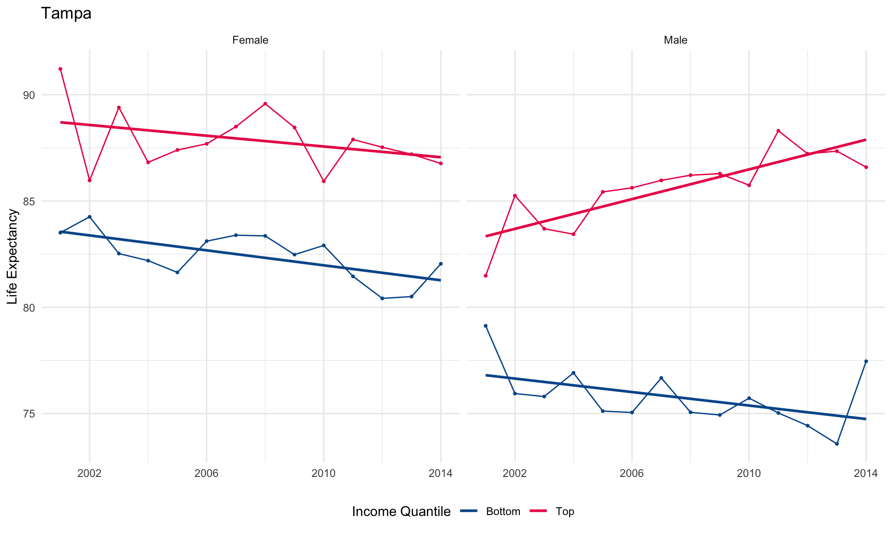
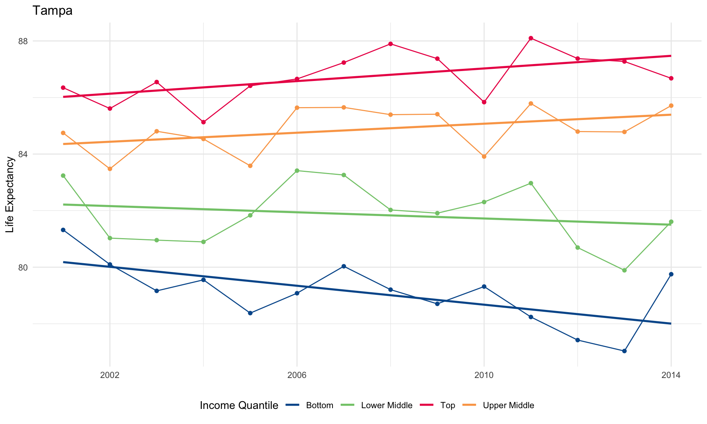
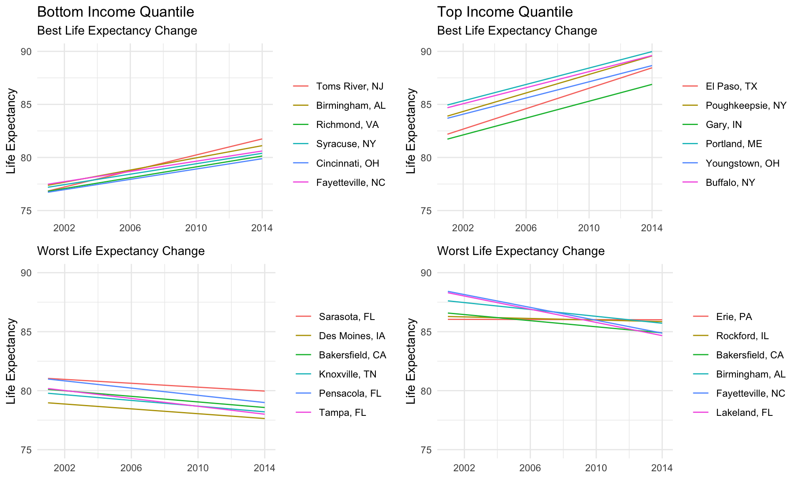

life_exp_file <- here::here("data", "health_ineq_online_table_9.csv")
life_exp <- read_csv(life_exp_file)income_quantiles <- c(
"1" = "Bottom",
"2" = "Lower Middle",
"3" = "Upper Middle",
"4" = "Top"
)
adjustment_types <- c(raceadj = "Race Adjusted", agg = "Unadjusted")
life_exp_tidy <-
life_exp %>%
select(cz:year, contains("le_")) %>%
gather(key, value, contains("le_")) %>%
extract(
col = key,
into = c("variable", "adjustment", "income_quantile", "sex"),
regex = "(sd_le|le)_(raceadj|agg)_q(\\d)_(\\w)"
) %>%
mutate(
adjustment = recode(adjustment, !!!adjustment_types),
income_quantile = recode(income_quantile, !!!income_quantiles),
sex = recode(sex, "F" = "Female", "M" = "Male")
) %>%
rename(state = stateabbrv) %>%
spread(variable, value)income_quantile_colors <- c(
"Bottom" = "#00589a",
"Lower Middle" = "#82c878",
"Upper Middle" = "#faa555",
"Top" = "#eb1455"
)
life_exp_tidy %>%
filter(
czname == "Tampa",
adjustment == "Race Adjusted",
income_quantile %in% c("Bottom", "Top")
) %>%
ggplot() +
aes(
x = year, y = le,
color = income_quantile,
group = paste(income_quantile, sex)
) +
geom_point(size = 0.75, show.legend = FALSE) +
geom_line() +
geom_smooth(method = "lm", se = FALSE) +
facet_wrap(~ sex) +
scale_color_manual(values = income_quantile_colors) +
scale_x_continuous(breaks = seq(2002, 2018, 4)) +
labs(
title = "Tampa",
x = NULL,
y = "Life Expectancy",
color = "Income Quantile"
) +
theme_minimal() +
theme(legend.position = "bottom")
life_exp_tidy_mean <-
life_exp_tidy %>%
gather(variable, value, le:sd_le) %>%
nest(sex, value) %>%
mutate(value = map_dbl(data, ~ mean(.$value))) %>%
select(-data) %>%
spread(variable, value)life_exp_tidy_mean %>%
filter(
czname == "Tampa",
adjustment == "Race Adjusted"
) %>%
ggplot() +
aes(x = year, y = le, color = income_quantile) +
geom_point(show.legend = FALSE) +
geom_line() +
geom_smooth(method = "lm", se = FALSE) +
scale_x_continuous(breaks = seq(2002, 2018, 4)) +
theme_minimal() +
labs(
title = "Tampa",
x = NULL,
y = "Life Expectancy",
color = "Income Quantile"
) +
scale_color_manual(values = income_quantile_colors) +
theme(legend.position = "bottom")
life_exp_model <-
life_exp_tidy_mean %>%
select(czname, state, pop2000, year, adjustment, income_quantile, le) %>%
filter(
adjustment == "Race Adjusted",
income_quantile %in% c("Bottom", "Top")
) %>%
nest(year, le) %>%
mutate(
lm = map(data, ~ lm(le ~ year, data = .x)),
pred = map2(data, lm, modelr::add_predictions),
est = map(lm, broom::tidy)
)
head(life_exp_model)## # A tibble: 6 x 9
## czname state pop2000 adjustment income_quantile data lm pred est
## <chr> <chr> <dbl> <chr> <chr> <lis> <lis> <lis> <lis>
## 1 Knoxvi… TN 727600 Race Adjus… Bottom <tib… <lm> <tib… <tib…
## 2 Greens… NC 1055133 Race Adjus… Bottom <tib… <lm> <tib… <tib…
## 3 Charlo… NC 1423942 Race Adjus… Bottom <tib… <lm> <tib… <tib…
## 4 Fayett… NC 644101 Race Adjus… Bottom <tib… <lm> <tib… <tib…
## 5 Raleigh NC 1412127 Race Adjus… Bottom <tib… <lm> <tib… <tib…
## 6 Virgin… VA 1119468 Race Adjus… Bottom <tib… <lm> <tib… <tib…life_exp_model_results <-
life_exp_model %>%
unnest(est) %>%
filter(term == "year") %>%
select(-adjustment, -term, -std.error, -statistic, -p.value) %>%
spread(income_quantile, estimate) %>%
mutate(czname = fct_reorder(czname, Bottom, .desc = TRUE)) %>%
arrange(czname) %>%
rename(
"Commuting Zone" = czname,
"State" = state,
"Population (2000)" = pop2000
)life_exp_model_results %>%
head(n = 10) %>%
knitr::kable(digits = 3, caption = "Top 10 Cities")| Commuting Zone | State | Population (2000) | Bottom | Top |
|---|---|---|---|---|
| Toms River | NJ | 1126217 | 0.378 | 0.224 |
| Birmingham | AL | 1038182 | 0.287 | -0.146 |
| Richmond | VA | 1040192 | 0.256 | 0.347 |
| Syracuse | NY | 1080612 | 0.246 | 0.126 |
| Cincinnati | OH | 1954800 | 0.243 | 0.337 |
| Fayetteville | NC | 644101 | 0.241 | -0.272 |
| Springfield | MA | 680014 | 0.234 | 0.115 |
| Gary | IN | 675971 | 0.223 | 0.397 |
| Scranton | PA | 857487 | 0.209 | 0.180 |
| Honolulu | HI | 876156 | 0.208 | 0.025 |
life_exp_model_results %>%
tail(n = 10) %>%
knitr::kable(digits = 3, caption = "Worst 10 Cities")| Commuting Zone | State | Population (2000) | Bottom | Top |
|---|---|---|---|---|
| Cape Coral | FL | 692265 | -0.068 | 0.196 |
| Miami | FL | 3955969 | -0.071 | 0.319 |
| Tucson | AZ | 999882 | -0.072 | 0.161 |
| Albuquerque | NM | 755244 | -0.077 | 0.122 |
| Sarasota | FL | 763795 | -0.083 | 0.183 |
| Des Moines | IA | 595842 | -0.103 | 0.310 |
| Bakersfield | CA | 661645 | -0.118 | -0.129 |
| Knoxville | TN | 727600 | -0.121 | 0.112 |
| Pensacola | FL | 623252 | -0.153 | 0.256 |
| Tampa | FL | 2395997 | -0.167 | 0.112 |
plot_modeled_life_exp <- function(income_quantile, group, data) {
data %>%
arrange(rank) %>%
mutate(
city = paste(czname, state, sep = ", "),
city = fct_inorder(city)
) %>%
ggplot() +
aes(year, pred, color = city) +
geom_line() +
scale_y_continuous(limits = c(75, 90)) +
scale_x_continuous(breaks = seq(2002, 2018, 4)) +
labs(x = NULL, y = "Life Expectancy", color = NULL) +
ggtitle(
if (group == "Best") glue::glue("{income_quantile} Income Quantile"),
glue::glue("{group} Life Expectancy Change")
) +
theme_minimal()
}
life_exp_model %>%
mutate(
coef = map_dbl(est, ~ .x %>% filter(term == "year") %>% pull(estimate))
) %>%
group_by(income_quantile) %>%
mutate(rank = min_rank(desc(coef))) %>%
ungroup() %>%
filter(!between(rank, 7, 94)) %>%
mutate(group = case_when(rank <= 10 ~ "Best", TRUE ~ "Worst")) %>%
arrange(rank) %>%
unnest(pred) %>%
nest(-income_quantile, -group) %>%
arrange(group, income_quantile) %>%
mutate(plot = pmap(., plot_modeled_life_exp)) %>%
pull(plot) %>%
cowplot::plot_grid(plotlist = ., ncol = 2)